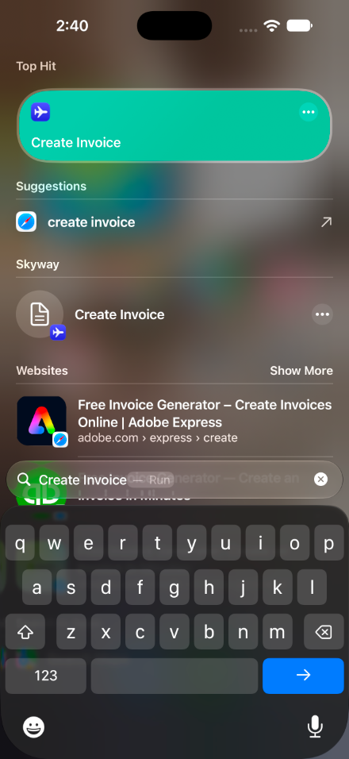
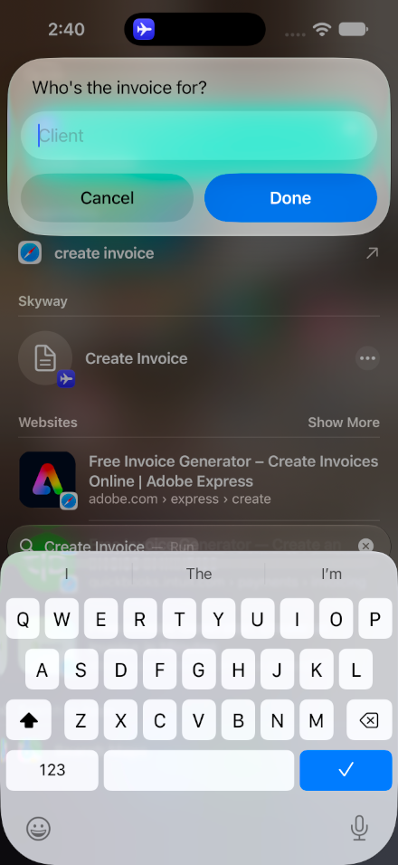
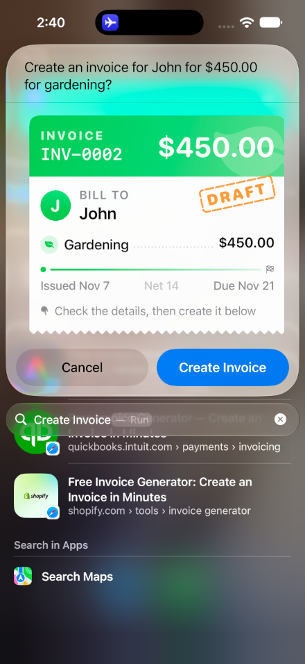
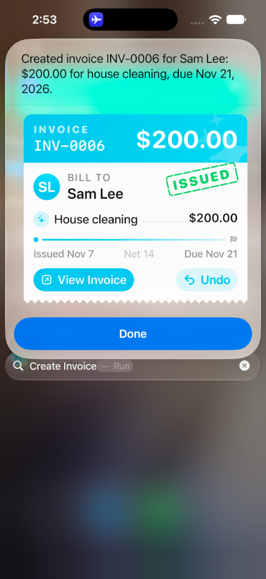
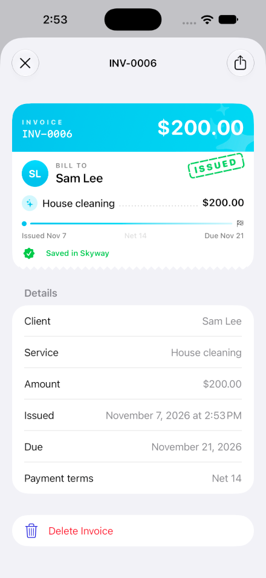
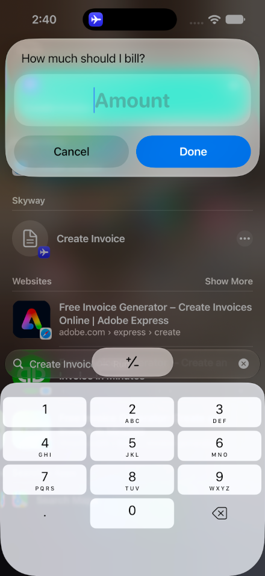
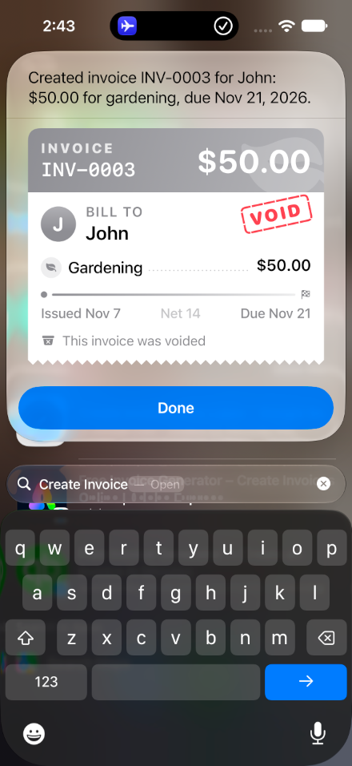

How Create Invoice works
The complete journey of “Create an invoice for John, gardening, $450”: from tapping it in Shortcuts, Spotlight or asking Siri, through the confirmation card, to the invoice opening in Skyway. Each step shows the code that makes it happen.
OverviewThe journey at a glance
These are real screenshots from the iPhone simulator. The person never opens Skyway until they choose to view the invoice.





Runs “Create Invoice”
PersonTaps it in the Shortcuts app or Spotlight, or says “Create an invoice in Skyway”.
The system asks for each missing value
iOS“Who's the invoice for?” → “What's the invoice for?” → “How much should I bill?”, using each parameter's requestValueDialog.
CreateInvoiceIntent.perform() checks the values
SkywayEmpty client or service, or an amount of $0, throws a clear error that Siri reads out.
requestConfirmation shows the draft card
Skywayperform() pauses here. The system draws InvoiceDraftSnippetIntent's view with Create Invoice and Cancel.
Taps Create Invoice
PersonCancel throws, so perform() stops and nothing is saved.
InvoiceStore.createInvoice saves it
SkywayIt gets the next number, like INV-0004, and a due date 14 days out.
.result(value:dialog:snippetIntent:)
SkywaySiri says “Created invoice INV-0004 for John…” and shows InvoiceCreatedSnippetIntent's card.
Taps Undo or View Invoice
PersonUndo runs DeleteInvoiceIntent and the card redraws as VOID. View Invoice follows skyway://invoice/<id> into the app.
ArchitectureThe pieces and how they fit
Three kinds of intents do the work. The model layer is shared by the intents and the app, so an invoice created from Siri is the same one the app shows.
SkywayShortcuts, ask for values, draw the cards, run button intentsStep 1Showing up in Shortcuts and Siri
An App Shortcut makes the intent available the moment the app is installed, with no setup by the person. It appears in the Shortcuts app under Skyway, in Spotlight when you search “Create Invoice”, and it lets Siri understand the phrases.
App/Siri/Tools/SkywayShortcuts.swiftstruct SkywayShortcuts: AppShortcutsProvider {
static var appShortcuts: [AppShortcut] {
// …Upcoming Trip and Change Seat…
AppShortcut(
intent: CreateInvoiceIntent(),
phrases: [
"Create an invoice in \(.applicationName)",
"Make an invoice in \(.applicationName)",
"Bill a client in \(.applicationName)",
"New \(.applicationName) invoice",
],
shortTitle: "Create Invoice",
systemImageName: "doc.text"
)
}
}AppEnum or known entities). A client name or an amount can be anything, so the phrase starts the action and the system then asks for each value. The newer Siri on iOS 27.3 can fill them in one sentence; see Step 10.
Every phrase must include \(.applicationName) so Siri knows which app is meant. Siri learns the phrases the first time the app is launched after installing.
Step 2Asking for client, service and amount
The intent declares three @Parameters. Because none has a default value, the system asks for each one before perform() runs, using its requestValueDialog. The type picks the keyboard: String gets letters, Double gets the number pad.
App/Siri/Tools/CreateInvoiceIntent.swiftstruct CreateInvoiceIntent: AppIntent {
static let title: LocalizedStringResource = "Create Invoice"
static let description = IntentDescription(
"Creates an invoice in US dollars that bills a client for a service, after you confirm. It's due in 14 days.",
searchKeywords: ["invoice", "bill", "charge", "billing", "client", "payment request"]
)
@Parameter(
title: "Client",
description: "The name of the person or business being billed, like John",
requestValueDialog: "Who's the invoice for?"
)
var clientName: String
@Parameter(
title: "Service",
description: "The work being billed, like gardening",
requestValueDialog: "What's the invoice for?"
)
var service: String
@Parameter(
title: "Amount",
description: "The total to bill, in US dollars, like 450",
requestValueDialog: "How much should I bill?"
)
var amount: Double
init() {} // required by AppIntent
}The description text matters too: the Shortcuts editor shows it, and Siri's model reads it to decide what to put in each value.

Double parameter gets the number padStep 3Checking the values
Once all three values are in, perform() starts. It tidies them up and stops early if something is wrong.
App/Siri/Tools/CreateInvoiceIntent.swift · perform()let client = clientName.trimmingCharacters(in: .whitespacesAndNewlines)
let work = service.trimmingCharacters(in: .whitespacesAndNewlines)
guard !client.isEmpty else { throw InvoiceError.missingClient }
guard !work.isEmpty else { throw InvoiceError.missingService }
guard amount > 0 else { throw InvoiceError.invalidAmount }The error type conforms to CustomLocalizedStringResourceConvertible. Without it, Siri would only say a generic “there was a problem”. With it, Siri says exactly what's wrong and what would fix it:
App/Siri/Support/InvoiceError.swiftenum InvoiceError: Error, CustomLocalizedStringResourceConvertible {
case missingClient, missingService, invalidAmount, notFound
var localizedStringResource: LocalizedStringResource {
switch self {
case .missingClient: "An invoice needs a client name, like John."
case .missingService: "An invoice needs a service to bill for, like gardening."
case .invalidAmount: "The amount needs to be more than $0, like 450."
case .notFound: "That invoice isn't in Skyway anymore."
}
}
}Step 4The confirmation card
Before saving, the intent shows the draft and waits. requestConfirmation(actionName:dialog:snippetIntent:) (iOS 26) does three things:
- shows or speaks the
dialogquestion, - draws the card that the
snippetIntentreturns, - suspends
perform()until the person answers. Confirm returns normally; Cancel throws, so the code after it never runs.
App/Siri/Tools/CreateInvoiceIntent.swift · perform()try await requestConfirmation(
actionName: .custom(
acceptLabel: "Create Invoice",
acceptAlternatives: ["Yes", "Create it", "Send it"],
denyLabel: "Cancel",
denyAlternatives: ["No", "Don't create it"],
destructive: false
),
dialog: "Create an invoice for \(client) for \(Invoice.format(amount)) for \(work.lowercased())?",
snippetIntent: InvoiceDraftSnippetIntent(clientName: client, service: work, amount: amount)
)
// Only reached after “Create Invoice”..custom(…) sets the button titles. The Alternatives are other words a person can say to Siri to answer.
The snippet intent that draws the draft
A SnippetIntent is a small intent whose only job is to return a view. It takes the values it needs as @Parameters, and needs a custom init so the main intent can create it with those values.
App/Siri/Snippets/InvoiceSnippetIntents.swiftstruct InvoiceDraftSnippetIntent: SnippetIntent {
static let title: LocalizedStringResource = "Invoice Draft"
static let isDiscoverable = false // keep it out of the Shortcuts action list
@Parameter(title: "Client") var clientName: String
@Parameter(title: "Service") var service: String
@Parameter(title: "Amount") var amount: Double
init() {}
init(clientName: String, service: String, amount: Double) {
self.clientName = clientName
self.service = service
self.amount = amount
}
func perform() async throws -> some IntentResult & ShowsSnippetView {
// Only reads: the next number isn't used up until the invoice is saved.
.result(view: InvoiceCard(
number: InvoiceStore.nextNumber,
clientName: clientName, service: service, amount: amount,
dueDate: Invoice.dueDate(from: .now),
status: .draft
))
}
}Step 5Designing the receipt card
One SwiftUI view, InvoiceCard, draws every state: the draft in Siri, the issued card, the voided card, and the card at the top of the in-app detail screen.
footer: “Check the details…”
footer: View Invoice · Undo
card turns gray
App/Siri/Snippets/InvoiceCard.swiftenum Status {
case draft // In Siri, waiting for the person to confirm.
case created(Invoice) // In Siri, just created, with View Invoice and Undo.
case saved // In the app, where there's nothing to confirm or undo.
case deleted // Undone from Siri.
}What makes it feel like a receipt
| Detail | How it's built |
|---|---|
| Color and icon from the service | InvoiceTheme(service:) looks for keywords: “garden”, “lawn” → green leaf.fill; “clean” → cyan sparkles; “dog”, “pet” → mint pawprint.fill; “design”, “logo” → pink paintbrush.pointed.fill; and about ten more. Anything else gets an indigo briefcase. |
| Header band | A LinearGradient in the theme color, the number in a monospaced font, the total in large rounded figures, and the icon as a big faint watermark rotated −15°. |
| Client initials | The first letter of up to two words (“Maria Lopez” → ML) in a circle filled with color.gradient. |
| Dotted leader | A one-line Shape stroked with dash: [0.1, 5] and round caps, which draws dots between the service and its price. |
| Due-date timeline | A dot, a gradient capsule and a checkered flag, labeled “Issued Nov 7 · Net 14 · Due Nov 21”. |
| Rubber stamp | Heavy rounded text in a dashed rounded rectangle, rotated −12°, placed as an overlay so it sits on top of the card. |
| Torn edge | A custom TornEdge shape with rounded top corners and a zigzag bottom, used for both the background and the clip. |
App/Siri/Snippets/InvoiceTheme.swiftstruct InvoiceTheme {
var symbol: String
var color: Color
init(service: String) {
let text = service.lowercased()
let match = Self.themes.first { keywords, _ in keywords.contains { text.contains($0) } }
(symbol, color) = match?.1 ?? ("briefcase.fill", .indigo)
}
private static let themes: [([String], (String, Color))] = [
(["garden", "lawn", "landscap", "plant", "tree", "yard", "mow"], ("leaf.fill", .green)),
(["clean", "wash", "maid", "tidy"], ("sparkles", .cyan)),
(["dog", "pet", "walk", "groom"], ("pawprint.fill", .mint)),
// …repairs, building, design, photography, tutoring, catering, software, driving
]
}App/Siri/Snippets/InvoiceCard.swift · TornEdge// …rounded top corners, then down the right side…
let teeth = max(1, Int(rect.width / toothWidth))
let step = rect.width / CGFloat(teeth)
for tooth in 0..<teeth {
let x = rect.maxX - CGFloat(tooth) * step
path.addLine(to: CGPoint(x: x - step / 2, y: rect.maxY)) // down to a point
path.addLine(to: CGPoint(x: x - step, y: bottom)) // back up
}
path.closeSubpath().saturation(0). It worked in SwiftUI previews but Siri ignored it, so the VOID card stayed colorful. The fix is to change the color itself: private var color: Color { isDeleted ? .gray : theme.color }. Keep snippet views to plain shapes, colors, text and images.
Step 6Saving the invoice
After confirmation, perform() hands off to the model layer. The intent stays thin; the store owns numbering and saving.
App/Invoice.swiftstruct Invoice: Identifiable, Hashable, Codable, Sendable {
/// Created once and saved, so Siri and Shortcuts can find the invoice again.
var id: String
var number: String // INV-0004
var clientName: String
var service: String
var amount: Double // US dollars
var createdAt: Date
var dueDate: Date // createdAt + 14 days
var url: URL { URL(string: "skyway://invoice/\(id)")! }
}App/InvoiceStore.swiftenum InvoiceStore {
/// Every invoice, newest first, decoded from UserDefaults.
static var invoices: [Invoice] { /* … */ }
/// The number the next invoice gets. Numbers keep counting up after an undo.
static var nextNumber: String {
String(format: "INV-%04d", UserDefaults.standard.integer(forKey: lastNumberKey) + 1)
}
static func createInvoice(clientName: String, service: String, amount: Double) -> Invoice {
let invoice = Invoice(number: nextNumber, clientName: clientName, service: service, amount: amount)
UserDefaults.standard.set(UserDefaults.standard.integer(forKey: lastNumberKey) + 1, forKey: lastNumberKey)
save([invoice] + invoices)
return invoice
}
static func deleteInvoice(id: Invoice.ID) { save(invoices.filter { $0.id != id }) }
}UserDefaults means the invoice is still there when the app opens.
For Siri and Shortcuts, an invoice is described by InvoiceEntity, an AppEntity. Returning it as the intent's value lets a person chain it into another shortcut step, for example to send the amount in a message.
App/Siri/Entities/InvoiceEntity.swiftstruct InvoiceEntity: AppEntity {
static let typeDisplayRepresentation: TypeDisplayRepresentation = "Invoice"
static let defaultQuery = InvoiceEntityQuery()
var id: String
@Property(title: "Number") var number: String
@Property(title: "Client") var clientName: String
@Property(title: "Amount") var amount: Double
// …service, due date
var displayRepresentation: DisplayRepresentation {
DisplayRepresentation(
title: "\(number) · \(clientName)",
subtitle: "\(service) · \(Invoice.format(amount)) · Due …",
image: .init(systemName: "doc.text")
)
}
}Step 7The result card
The last line of perform() returns three things at once. The return type lists each capability:
App/Siri/Tools/CreateInvoiceIntent.swift · perform()func perform() async throws
-> some IntentResult & ReturnsValue<InvoiceEntity>
& ProvidesDialog & ShowsSnippetIntent {
// …check, confirm…
let invoice = InvoiceStore.createInvoice(
clientName: client, service: work, amount: amount)
let due = invoice.dueDate.formatted(date: .abbreviated, time: .omitted)
return .result(
value: invoice.entity, // for the next shortcut step
dialog: "Created invoice \(invoice.number) for \(client): \(invoice.amountText) for \(work.lowercased()), due \(due).",
snippetIntent: InvoiceCreatedSnippetIntent(invoice: invoice)
)
}The dialog is what Siri says, which matters with AirPods or CarPlay where there's no screen. The snippetIntent is what it shows.
Why the result card takes plain values, not the entity
App/Siri/Snippets/InvoiceSnippetIntents.swift/// Takes plain values rather than an InvoiceEntity,
/// so it can still draw after Undo deletes the invoice.
struct InvoiceCreatedSnippetIntent: SnippetIntent {
@Parameter(title: "Invoice ID") var invoiceID: String
@Parameter(title: "Number") var number: String
// …client, service, amount, due date
func perform() async throws -> some IntentResult & ShowsSnippetView {
// Read the current state each time the card is drawn.
let invoice = InvoiceStore.invoices(with: [invoiceID]).first
return .result(view: InvoiceCard(
number: number, clientName: clientName, service: service,
amount: amount, dueDate: dueDate,
issuedDate: invoice?.createdAt ?? .now,
status: invoice.map { .created($0) } ?? .deleted
))
}
}If it took an InvoiceEntity, the system would look the invoice up again every time it redraws the card. After Undo the invoice is gone, the lookup would fail, and the card would turn into an error. With plain values the card can always draw, and switches to VOID when the invoice no longer exists.
Step 8Undo, right in the card
Buttons inside a snippet must use Button(intent:). A normal Button { … } closure doesn't run in Siri, because the card is drawn by the system, not by the app.
App/Siri/Snippets/InvoiceCard.swift · footerButton(intent: DeleteInvoiceIntent(invoiceID: invoice.id)) {
Label("Undo", systemImage: "arrow.uturn.backward")
}
.buttonStyle(.bordered)App/Siri/Tools/DeleteInvoiceIntent.swiftstruct DeleteInvoiceIntent: AppIntent {
static let title: LocalizedStringResource = "Delete Invoice"
static let isDiscoverable = false
@Parameter(title: "Invoice ID") var invoiceID: String
func perform() async throws -> some IntentResult {
guard !InvoiceStore.invoices(with: [invoiceID]).isEmpty else {
throw InvoiceError.notFound
}
InvoiceStore.deleteInvoice(id: invoiceID)
return .result() // no need to redraw by hand
}
}
Tap Undo
DeleteInvoiceIntent.perform() deletes the invoice
changes dataThe system runs InvoiceCreatedSnippetIntent.perform() again
automaticIt finds no invoice with that ID, so it draws the card as .deleted.
Step 9View Invoice opens the app
View Invoice is a SwiftUI Link to a skyway:// URL. Four small pieces make it work:
1 · Register the URL scheme
Project.json → Info.plist"CFBundleURLTypes": [{
"CFBundleURLName": "com.badarinathvm.skyway",
"CFBundleURLSchemes": ["skyway"]
}]2 · Link to it from the card
App/Siri/Snippets/InvoiceCard.swift · footer// A link rather than an intent button: Siri and Spotlight open the app for links.
Link(destination: invoice.url) { // skyway://invoice/<id>
Label("View Invoice", systemImage: "arrow.up.forward.app")
}
.buttonStyle(.borderedProminent)3 · Receive the link and remember which invoice to show
App/ContentView.swift@Bindable private var navigator = AppNavigator.shared
// …
.sheet(item: $navigator.presentedInvoice) { invoice in
InvoiceDetailView(invoice: invoice)
}
.onOpenURL { url in
navigator.open(url)
}App/AppNavigator.swift@MainActor
@Observable
final class AppNavigator {
static let shared = AppNavigator()
/// The invoice shown in a sheet, or nil when none is open.
var presentedInvoice: Invoice?
/// Shows the screen a skyway:// link points to, like skyway://invoice/<id>.
func open(_ url: URL) {
guard url.scheme == "skyway", url.host() == "invoice",
let id = url.pathComponents.dropFirst().first,
let invoice = InvoiceStore.invoices(with: [id]).first
else { return }
presentedInvoice = invoice
}
}AppNavigator is shared, so OpenInvoiceIntent (the “Open Invoice” action in Shortcuts) sets the same presentedInvoice and gets the same screen.
4 · The detail screen
InvoiceDetailView is a List: the same InvoiceCard with status: .saved, a Details section built from LabeledContent rows, a Share button (ShareLink with a plain-text copy) and Delete Invoice behind a confirmationDialog.
Button(intent: OpenInvoiceIntent(…)). OpenIntent is meant to bring the app forward, and the app did start (the log showed a new scene), but when the card came from Spotlight it stayed on top and Skyway never appeared. Even adding continueInForeground didn't help. A Link is handed to the system as a URL to open, which reliably switches to the app. OpenInvoiceIntent is kept for use in Shortcuts.
Step 10Apple Intelligence Siri: one sentence
On iOS 27.3, Siri's model can call an app's intents as tools and fill in their values from what the person said. One line opts the intent in:
App/Siri/Tools/CreateInvoiceIntent.swift@available(iOS 27.3, *)
extension CreateInvoiceIntent: ToolIntent {}The app supports iOS 27.0, so the conformance is in a separate extension that only exists on 27.3 and later. On earlier versions everything else keeps working through Shortcuts, Spotlight and the App Shortcut phrases.
With it, “Create an invoice for John for gardening, 450 dollars in Skyway” can go straight to the confirmation card. The model fills the values using the metadata from Step 2: the intent's description and searchKeywords, and each parameter's description (“The total to bill, in US dollars, like 450”). Clear descriptions make the difference between Siri filling the values and Siri asking for them.
requestConfirmation. Creating an invoice has a real effect, so the person always sees the draft first.
TakeawaysLessons learned
| Rule | Why |
|---|---|
| Snippet intents only read | The system re-runs SnippetIntent.perform() whenever it redraws, so saving or deleting there would happen more than once. |
Buttons use Button(intent:) | Closures don't run in a card drawn by the system. The action intent just returns .result(); the card redraws by itself. |
Use Link to open the app | An OpenIntent behind a card button didn't bring Skyway forward from Spotlight. |
| Pass plain values to the result card | An entity parameter is looked up again on every redraw and fails once Undo deletes it. |
| Change colors, not effects | Siri ignored .saturation. Plain colors, shapes, text and SF Symbols render reliably. |
| Errors explain the fix | CustomLocalizedStringResourceConvertible lets Siri say “An invoice needs a client name, like John.” |
| Save, don't just remember | Siri may run the intent with the app in the background and iOS may end it afterward. |
Custom inits on intents you build | Snippet and button intents are created in code with values, so each needs init() plus an init that sets its @Parameters. |
ReferenceFile map
| File | What it does |
|---|---|
Siri/Tools/SkywayShortcuts.swift | The “Create Invoice” App Shortcut and its phrases |
Siri/Tools/CreateInvoiceIntent.swift | The main intent: ask, check, confirm, save, return. Also the ToolIntent extension |
Siri/Tools/DeleteInvoiceIntent.swift | Behind the Undo button |
Siri/Support/InvoiceError.swift | The errors Siri reads out |
Siri/Snippets/InvoiceSnippetIntents.swift | InvoiceDraftSnippetIntent and InvoiceCreatedSnippetIntent |
Siri/Snippets/InvoiceCard.swift | The receipt view for every state, plus the stamp, timeline, dotted leader and torn edge |
Siri/Snippets/InvoiceTheme.swift | Picks the color and SF Symbol from the service |
Invoice.swift | The invoice value, due date, currency formatting and skyway:// URL |
InvoiceStore.swift | Saves invoices in UserDefaults and hands out invoice numbers |
Siri/Entities/InvoiceEntity.swift | How Siri and Shortcuts see an invoice, and its query |
Siri/Tools/OpenInvoiceIntent.swift | “Open Invoice” for Shortcuts |
AppNavigator.swift | Which invoice the app should show; parses skyway://invoice/<id> |
InvoiceDetailView.swift | The in-app invoice screen with Share and Delete |
ContentView.swift | Presents the detail sheet and receives links with onOpenURL |
Project.json | Registers the skyway URL scheme |
Try it yourself
- Run Skyway once so iOS learns its shortcuts.
- Open the Shortcuts app, scroll to Skyway, tap Create Invoice. Or search “Create Invoice” in Spotlight, or say “Create an invoice in Skyway”.
- Answer John, gardening, 450. Check the green DRAFT card and tap Create Invoice.
- Tap Undo to see VOID, or run it again and tap View Invoice to open it in Skyway.
- Try “dog walking”, “house cleaning” or “logo design” to see other themes.